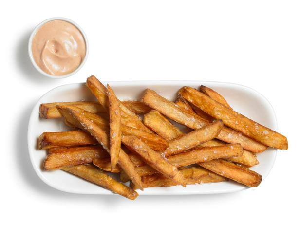

French Fry Recipe

How to cook french fries at home
By T-MH0
This recipe is even easier than cooking that fried chicken, but it does require some planning ahead.
Follow along as I walk you through these easy steps and when you're finished you will be amazed at how
simple it really is.
This recipe will guide you through,
- Preperation
- Cooking
- Serving
Here is what you will need
- Potatoes
- Salt/Pepper
- Vegetable Oil
Here are the steps
- Your first step is to cut the potatoes into the size fries you want to make
- Next, fill a large tub with water. Throw all the cut potatoes in and top with ice.
They will need to stay in cold water for 24 hours.
- Now that they have soaked, it's time to dry them off and cook.
- Heat oil in a cast iron skillet to 325 degrees.
- It is now time to throw your fries in the oil. They will only need a few minutes each.
You're watching for them to turn a light golden color.
- When done, pull them out and place them aside to cool. Continue doing this until all your
fries have cooked.
- We'll be double frying them, so when all are cooled, put them back into the oil for another
couple minutes. When they darken, they will be done.
- Final step. Put them in a bowl and season.
You are now ready to serve